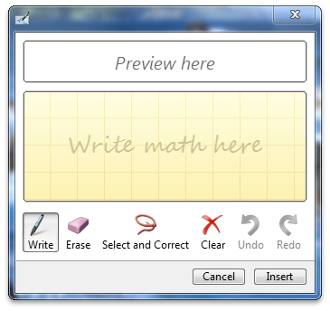

To create the math input control, you must:
The following code should be placed at the top of your code where you will be using the math input control.
// includes for implementation
#include "micaut.h"
#include "micaut_i.c"
This code will add support for the math input control to your application.
After you have included the headers for your control, you can declare the control pointer and can call CoInitialize on it to create a handle to the math input control interface. The following code can be placed in a class or as a global variable in your application's implementation:
CComPtr<IMathInputControl> g_spMIC; // Math Input Control
The following code shows how you can call CoInitialize on the control pointer.
HRESULT hr = CoInitialize(NULL);
hr = g_spMIC.CoCreateInstance(CLSID_MathInputControl);
After calling CoInitialize on the control pointer, you have a reference to the control and can access the control's methods. For example, you could enable the extended set of controls as shown in the following example.
hr = g_spMIC->EnableExtendedButtons(VARIANT_TRUE);
The control will not automatically appear after you create it. To show the control, call the Show method on the control reference that you created in the previous step. The following code demonstrates how the Show method can be called.
hr = g_spMIC->Show();
After the control shows, it will look something like the following illustration.

Note that I have enabled the extended set of buttons so that Redo and Undo are available.
Â
Â